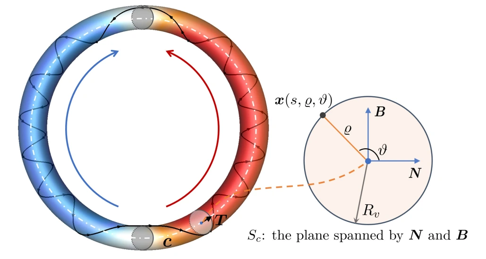
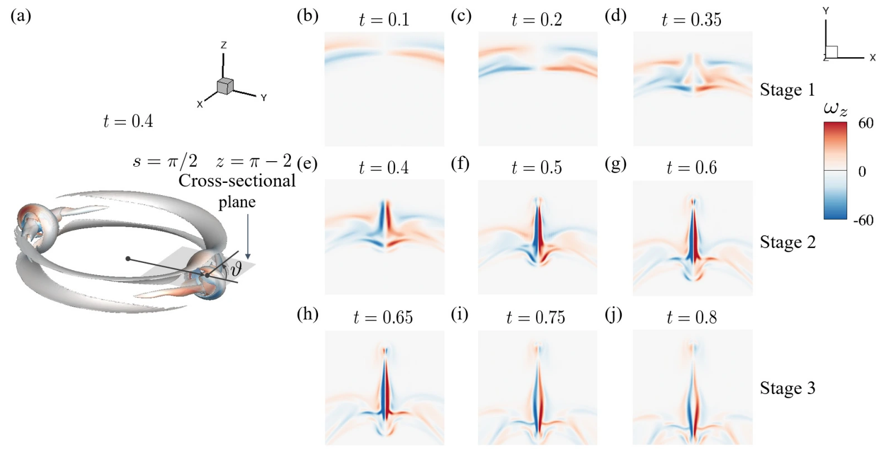

Can a twisted magnetic tube trigger vortex bursting without an imposed flow or initial vorticity? This study starts with an initially quiescent, incompressible magnetohydrodynamic fluid and a magnetic ring whose two halves have opposite chiralities.
没有外加流动和初始涡量，扭曲磁通管能否自行触发涡爆裂？本研究从静止的不可压缩磁流体出发，在其中放置一个两侧具有相反手性的磁环。
The resulting dynamics connect the geometry of the magnetic field to localized vorticity generation, magnetic-to-kinetic energy conversion, and the eventual breakdown of coherent structures.
其演化将磁场几何、局部涡量生成、磁能向动能的转化，以及相干结构最终的破碎联系起来。
A magnetic ring with opposite chiralities构造相反手性的磁环
The simulations use a smooth, closed magnetic ring with a sinusoidally varying twist. Its two halves twist in opposite directions, meeting at two chirality-inversion regions. The initial velocity is zero.
模拟采用光滑闭合的磁环，扭转率沿环呈正弦变化。两侧的扭转方向相反，在两个手性反转区域交汇；初始速度为零。
The incompressible MHD equations are solved with a pseudo-spectral method in a three-dimensional periodic domain, using a 1024³ grid and unit magnetic Prandtl number. Three Lundquist numbers, approximately 800, 1600 and 2670, probe the balance between Alfvénic evolution and resistive diffusion.
研究在三维周期区域内使用伪谱方法求解不可压缩磁流体方程，采用 1024³ 网格及单位磁普朗特数。约为 800、1600 和 2670 的三个 Lundquist 数，用于考察阿尔芬动力学与电阻扩散之间的关系。


How the bursting starts涡爆裂如何启动
The curl of the Lorentz force provides a localized source of vorticity, strongest near the chirality-inversion regions. Meanwhile, the pressure gradient generates an antisymmetric cross-helicity distribution in regions of maximum twist, indicating counter-propagating Alfvén waves.
洛伦兹力的旋度提供局部涡量源，在手性反转区域附近最强。同时，压强梯度在扭转最强区域产生反对称的交叉螺旋度分布，表征反向传播的阿尔芬波。
As these waves reach the chirality-inversion regions, they interact with the vorticity and amplify field-line deformation. Bursting therefore emerges from the initial magnetic configuration itself, without external strain or a prescribed vortex.
这些波到达手性反转区域后与涡量相互作用，放大磁力线变形。因此，爆裂源自初始磁构型本身，无需外加应变或预设涡旋。
Formation, expansion, and breakdown形成、扩张与破碎
The evolution separates into three stages. First, a disk-like vortex structure forms as magnetic energy is rapidly converted into kinetic energy. Next, the structure expands radially and stretches, with enhanced magnetic and kinetic dissipation and increasing cross- and kinetic-helicity components. Finally, coherent vortex and magnetic structures break down, with reconnection and fragmentation followed by declining helicity components and dissipation rates.
演化分为三个阶段：首先形成盘状涡结构，磁能迅速转化为动能；随后，结构径向扩张并拉伸，磁耗散与动能耗散增强，交叉螺旋度及动能螺旋度的分量增大；最后，相干涡结构与磁结构发生重联、破碎，螺旋度分量及耗散率随之下降。
Higher Lundquist numbers produce greater radial spreading and stronger peaks in the helicity components. Although total helicities remain zero by symmetry, their positive and negative components reveal substantial localized helical dynamics.
较高的 Lundquist 数对应更大的径向扩展和更高的螺旋度分量峰值。尽管总螺旋度因对称性保持为零，正、负分量仍揭示出显著的局部螺旋动力学。


What the mechanism can explain机制的意义与适用范围
The study identifies a self-contained magnetic route to eruptive dynamics that may help interpret twisted flux tubes in solar and laboratory plasmas. It does not directly reproduce a solar eruption: the simulations are incompressible, use a unit magnetic Prandtl number, and operate at Lundquist numbers below those of the solar corona.
研究揭示了一条由磁场自身驱动的爆发动力学路径，有助于理解太阳与实验室等离子体中的扭曲磁通管。模拟并非对太阳爆发的直接复现：它采用不可压缩假设和单位磁普朗特数，Lundquist 数也低于日冕中的典型水平。
This paper has been accepted for publication in the Journal of Fluid Mechanics.
本论文已被 Journal of Fluid Mechanics 接收。
Paper & authors
Vortex bursting in twisted magnetic flux tubes with opposite chiralities
J. Fluid Mech.
Cite this work
@article{wangVortexBursting,
title = {Vortex bursting in twisted magnetic flux tubes with opposite chiralities},
author = {Wang, Yanru and Xiong, Anda and Hao, Jinhua and Xiong, Shiying},
journal = {Journal of Fluid Mechanics}
}